Lo enciendes.
Ya estás en BASIC.
ZX-V es una máquina nueva con el espíritu del ZX Spectrum: no es un clon ni un emulador. Colores vivos sin color clash, dos chips AY y doce canales de muestras, una tarjeta SD en lugar de la cinta y un corazón RISC-V hecho con dos Raspberry Pi Pico 2.
Lo que habría hecho un fan del Spectrum con los chips de hoy.
Conserva lo que hacía especial al Spectrum (el BASIC al instante, los colores vivos, una máquina que se puede entender entera) y se deja los límites que solo venían de la tecnología de 1982.
Color sin clash
Cada píxel tiene su color: la paleta del Spectrum o cualquier otra, 16 por línea de entre 65.536 (hasta 64 en pantalla). Fundidos y ciclos de color, de regalo.
Un BASIC de verdad
Compatible con el Sinclair BASIC, con editor a pantalla completa, procedimientos, bucles estructurados, sprites, mapas de tiles, scroll y música.
Dos chips AY y muestras
Seis canales de AY-3-8912 y doce de muestras, en estéreo, más el beeper. Música en .zxm, PT3, MOD, XM y más; sonidos en WAV; efectos AYFX.
Tarjeta SD, no cinta
Carga y graba al instante. Hasta lee los .TAP y .TZX del Spectrum. Los juegos y los ejemplos vienen de serie en la ROM.
Los juegos vienen de serie.
Escribe CAT "ROM:" y ahí están todos, listos para LOAD.
Son juegos cortos y sencillos, hechos para enseñar lo que sabe hacer la máquina,
y cada uno es también un ejemplo: su código fuente está en el repositorio.
Pulsa uno para jugarlo aquí mismo, en el navegador.
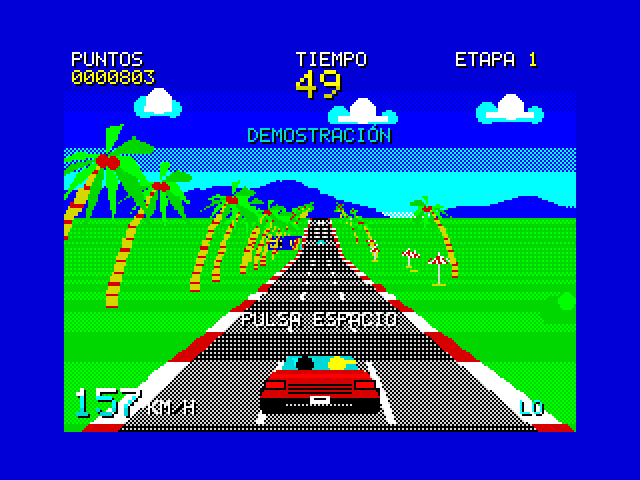
Jugar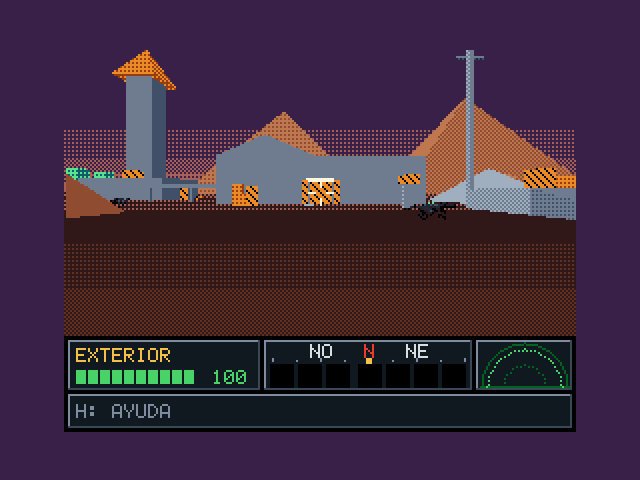
Jugar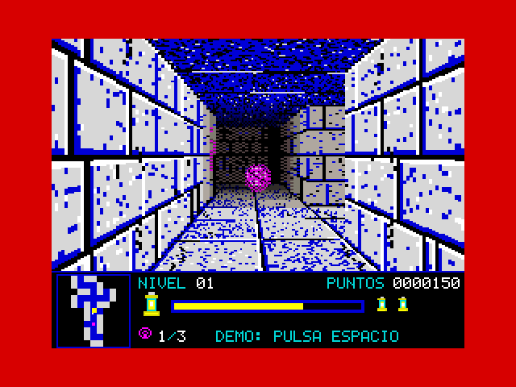
Jugar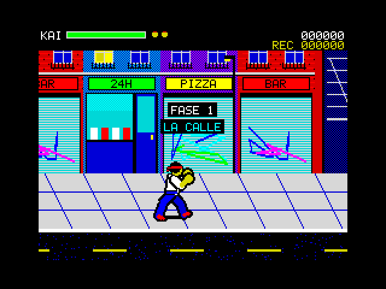
Jugar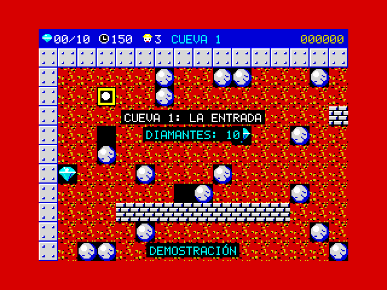
Jugar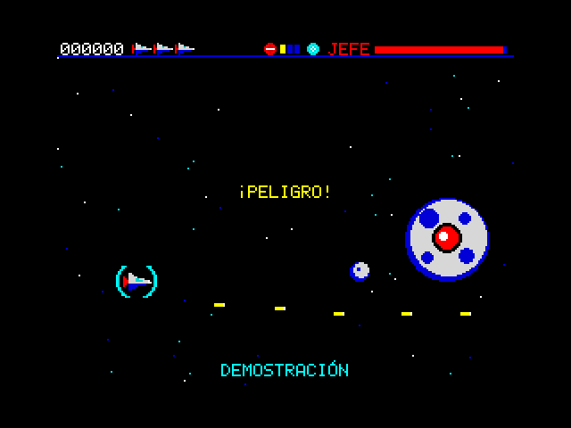
Jugar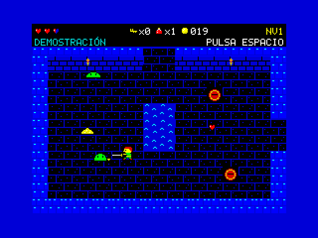
Jugar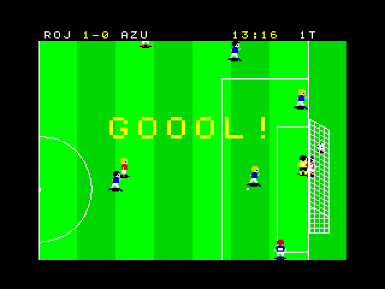
Jugar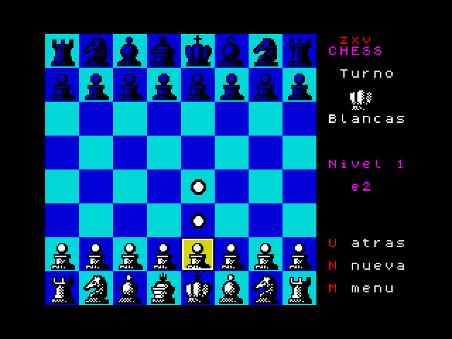
Jugar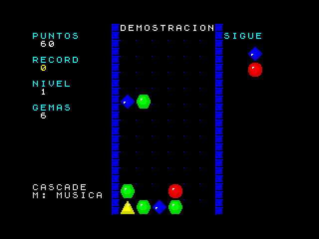
JugarY además: Sentry, Muncher, un juego de plataformas y Rock, Paper, Scissors en BASIC; un reproductor de música, una demostración de los canales de muestras, un editor de sprites y la prueba de la placa.
Empieza en BASIC. Llega tan lejos como quieras.
Como en el Spectrum, hay BASIC para todos y «código máquina» para los valientes, solo que aquí el código máquina es C en un RISC-V a 144 MHz.
ZX-V BASIC
Viene en la ROM. Lo escribes y le das a RUN. Los errores señalan el sitio exacto.
10 BORDER 0: PAPER 0: CLS 20 PRINT "Hola, soy ZX-V" 30 FOR i=1 TO 7 40 CIRCLE INK i;128,88,i*10 50 NEXT i
ZX Basic, compilado
El compilador ZX Basic de Boriel genera programas para ZX-V: escribes BASIC en el PC y va a velocidad nativa.
#include <zxv.bas> GRABSTR 1, 8, "...ee..." PAPER 0: INK 7: BORDER 0 PRINT AT 8, 12; INK 14; "STARDUST"
C con el SDK
Programas nativos RISC-V con GCC, el motor de sprites y tiles de la ROM y el reproductor de música.
#include "zxv_api.h" int main(void) { zxv_cls(7); zxv_print_str("¡Hola desde C!"); while (zxv_key_get() < 0) zxv_wait_vblank(); return 0; }
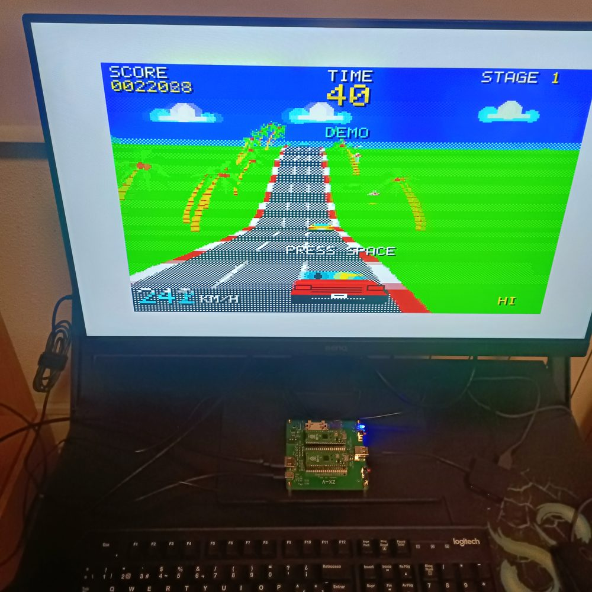
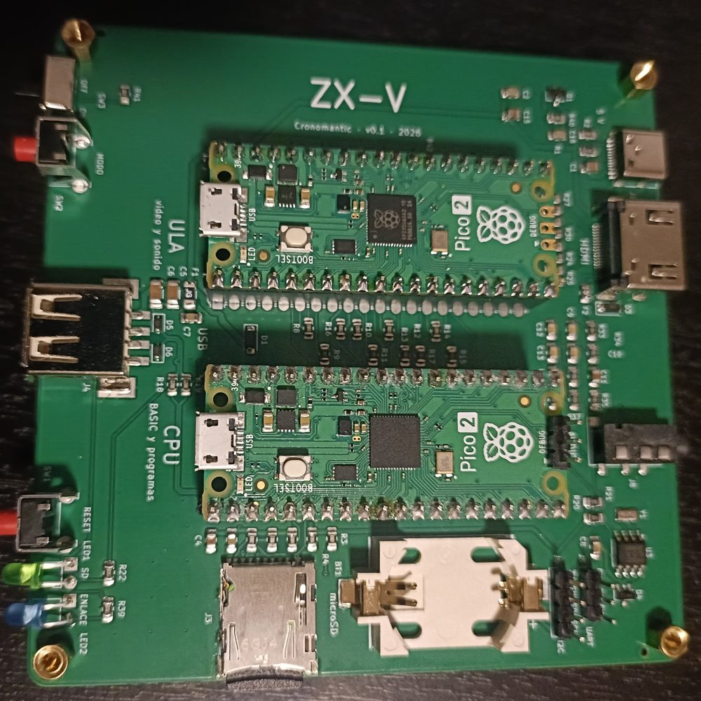
Dos Pico: una CPU y una «ULA».
Una Raspberry Pi Pico 2 es la CPU RISC-V y ejecuta el BASIC; la otra dibuja la imagen y hace el sonido, como la ULA del Spectrum.
La placa es hardware abierto (CERN-OHL-W v2): JLCPCB la hace con las piezas pequeñas ya soldadas, con los ficheros que están en el repositorio, y tú sueldas las dos Pico y unas pocas piezas grandes. La guía de la placa.
| CPU | Hazard3 RISC-V (RV32IMAC) a 144 MHz |
|---|---|
| Memoria | 244 KB para tus programas, más la memoria de vídeo |
| Vídeo | HDMI / DVI, 640×480 a 60 Hz · 256×192 con borde |
| Sonido | 2 × AY-3-8912, 12 canales de muestras (96 KB, 8 bits o ADPCM) + beeper, en estéreo por HDMI |
| Almacenamiento | microSD, FAT32 · unidad ROM: con ejemplos |
| Entrada | Teclado, mandos y ratón USB |
| Reloj | Reloj de tiempo real, con su pila |
| Enlace | Una UART para mandar programas desde el PC y servir la unidad EXT: |
- Emulador y ROM con el BASICWindows, Linux y el navegador
- El firmware de cada Pico, probado en una protoboard
- La primera placa funciona · noviembre de 2026Las dos Pico juntas, con
boardtest - La placa, publicada como hardware abiertoCERN-OHL-W v2, el diseño de KiCad en pcb/
- La placa, probada enteraEl reloj con su pila, la tarjeta microSD, el USB, el HDMI y el sonido
Descarga el emulador.
Gratis, con la ROM, los ejemplos y la documentación.
zxv-windows-x64.zip
LinuxLinux x86-64AppImage o un .tar.gz normal..AppImage · .tar.gz
WebEn el navegadorJuega ya, o descárgalo para usarlo sin conexión.zxv-web.zip
Pico 2FirmwarePara las dos Pico de la máquina real; las siguientes veces, desde la tarjeta microSD.zxv-uf2.zip
Hecho también con el trabajo de otros.
ZX-V es mejor gracias a ellos.
ximoKom
Hizo ZXV Chess, el ajedrez del disco ROM: contra la máquina o entre dos. También hace juegos para el ZX Spectrum.
José Rodríguez (Boriel)
Hizo ZX Basic, el compilador de BASIC para el ZX Spectrum que ahora también hace programas para ZX-V. Petit Soccer y Stardust están hechos con él.